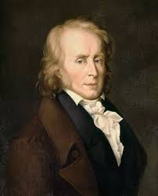

Benjamin Constant (1767-1830)
Benjamin Constant était un penseur libéral et défenseur de la République. Dans son essai "De la liberté des Anciens comparée à celle des Modernes" (1819), il développe une distinction entre les deux formes de liberté :
- Liberté des Anciens :
- Participation directe des citoyens à la vie politique de la cité.
- Liberté collective où les citoyens gouvernent ensemble, exigeant temps et volonté.
- Liberté des Modernes :
- Protection des droits individuels et des libertés personnelles.
- Mise en avant des libertés individuelles plutôt que de la participation politique directe.
Constant met en garde contre les dangers de l'excès de participation politique, affirmant que la liberté moderne doit protéger les individus contre l'oppression collective.
Alexis de Tocqueville (1805-1859)

Alexis de Tocqueville, issu de l'aristocratie française, est connu pour son ouvrage "De la démocratie en Amérique" (1835), où il analyse la société américaine et ses institutions.
Principes relevés par Tocqueville :
- L'égalisation des conditions : lutte pour l'égalité et rejet des privilèges et des inégalités.
- Tyrannie de la majorité : préoccupation que la majorité puisse imposer sa volonté à la minorité.
Tocqueville propose des solutions pour éviter la tyrannie :
- Mise en place de contre-pouvoirs importants entre les citoyens et l'État (syndicats, partis politiques).
- Séparation des pouvoirs pour maintenir l'équilibre politique et éviter la concentration du pouvoir entre les mains d'une seule entité.
Il observe également l'importance de la société civile et des institutions intermédiaires dans le maintien de la liberté et de la démocratie.